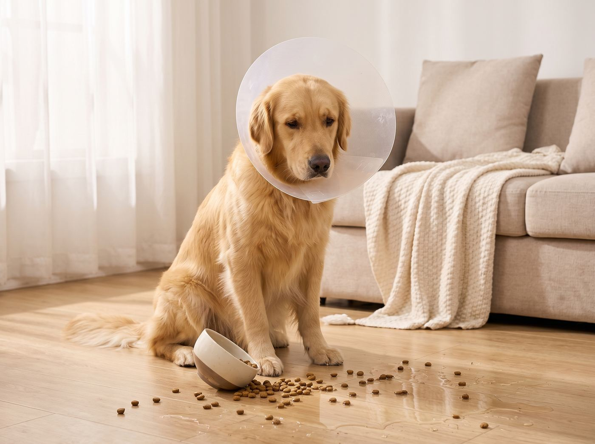
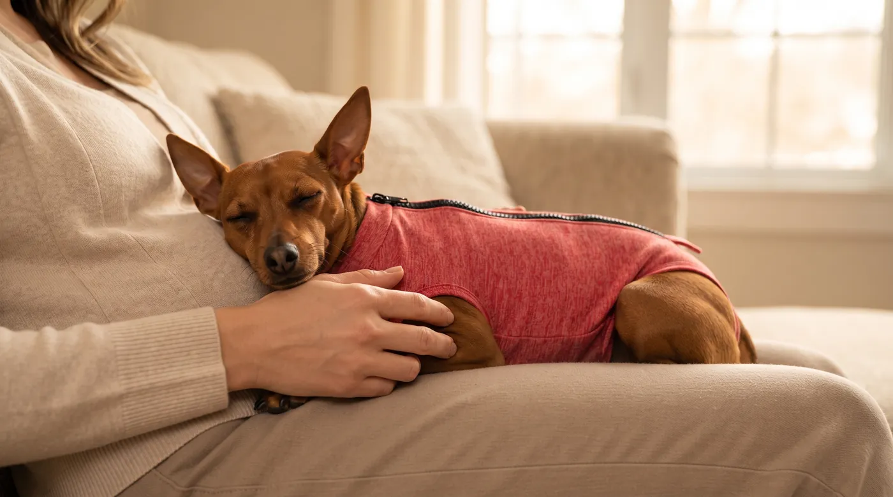
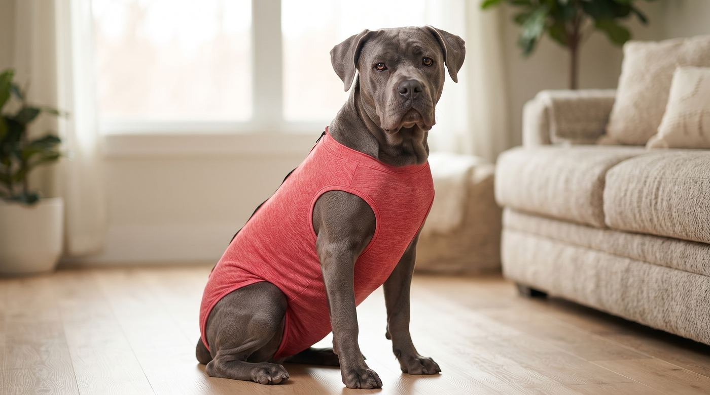

O body pós-cirúrgico feito para a raça do teu cão ou gato
Conforto real, sem stress, sem colar isabelino. Entregue em 24-48h úteis em Portugal e Espanha.
Vê como o teu cão ou gato recupera em paz no sofá
Sem colar isabelino, sem limitação de movimentos e sem stress nas idas ao jardim. O tecido cirúrgico elástico acompanha cada gesto do teu cão ou gato com total conforto.
Entrega 24-48h úteis
Envio expresso para Portugal e Espanha
Tecido Respirável
Elástico, leve e de secagem rápida
Tamanho por Raça
Medidas adaptadas morfologicamente
Fácil de Lavar
Lava à máquina e limpa sem lutas
O colar isabelino não devia ser a única opção
Sabemos como é difícil ver o teu animal frustrado, a bater em tudo, a não conseguir comer ou dormir descansado por causa do colar. Ele merece recuperar em paz — e tu mereces menos stress também.
Escolher o Conforto Dele

Feito a pensar em quem está a recuperar
Benefícios desenhados especificamente para a anatomia de cães e gatos em pós-operatório.
Liberdade de movimento
Tecido elástico que acompanha cada movimento, sem apertar nem roçar nas feridas.
Higiene sem complicações
Pode ficar vestido durante as necessidades fisiológicas e seca rápido.
O tamanho certo, à primeira
Desenvolvido com base em medidas reais por raça para um ajuste perfeito.
Fácil de vestir e tirar
Sistema de fecho dorsal prático em segundos, sem lutas nem stress.
Qual é a raça do teu companheiro?
Descobre em 2 segundos o tamanho anatómico recomendado e o valor exato para o teu patudo.
Seleciona o tipo e a raça acima para calcular
Do sofá para casa, em 4 passos
O processo simples e rápido para garantir conforto imediato ao teu companheiro.
Escolhe o tamanho certo
Usa a nossa calculadora por raça ou mede o peito do teu companheiro em 15 segundos.
Encomenda hoje
Finaliza a compra em menos de 1 minuto no nosso checkout seguro.
Recebe em 24 a 48h úteis
Envio expresso para Portugal Continental e Espanha.
Veste em segundos
Pronto a recuperar em paz — sem stress e sem colar isabelino!

Escolhe o tamanho e cor
Disponível em vários tamanhos, para cães e gatos. Não sabes qual escolher? [Consulta a tabela de tamanhos]
A cor é determinada pelo tipo selecionado na secção acima.
💡 Essencial para o pós-operatório: Tenha sempre um body suplente limpo enquanto lava o outro.
Perguntas frequentes
Esclarece as tuas dúvidas rapidamente antes de encomendar.
O conforto dele não devia esperar
Encomenda hoje e recebe em 24-48h úteis em Portugal ou Espanha.
Encontra o tamanho certo agora